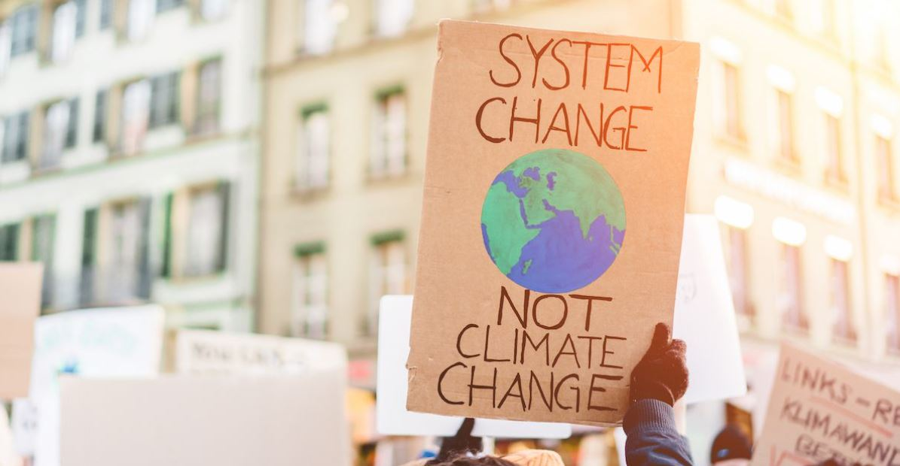

How You and the People Around You Can Take Action to Protect the Enviornment
Any amount of help is important for the envionrnment. Even if you are only able to do something "small", if everyone does it, it creates something big. There are many things that anyone can do on a day to day basis that could change the planet forever.
The impacts that are currently effecting the envionrment are becoming very concerning. If we, as a community, don't work together to try to combat it nothing might happen. Watch this video to see why:
| Link | Topic |
|---|---|
| greatnonprofits.org | Donating |
| triadrivertours.com | Volunteering |
It is important to donate when you can. There are many organizations out there that want to help the envionrnment but can't because they don't have enough funds to afford it. Even donating a tiny amount can create change in helping these programs pursue what they need to do to help the envionrment.

Volunteering is a very significant way that you can help the envionrment and the community around you without spending any money. There are many organizations that are in need of and ask for volunteers to help contribute to their goals of protecting and restoring the envionrment. Even just one extra volunteer provides a great amount of help to any organization that needs it.